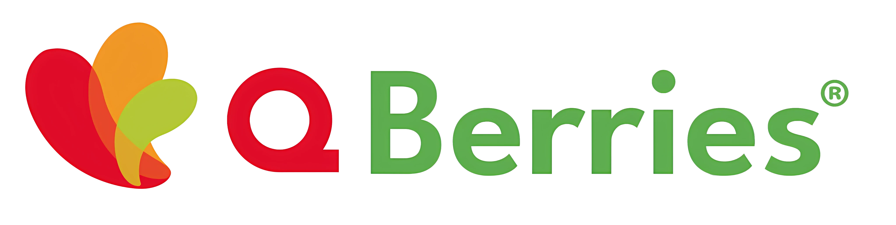

Q Berries
Pase de salida
Toque el botón para instalar la app en este celular. Luego ábrala desde su pantalla de inicio.
En iPhone / Safari:
- Toque el botón Compartir (cuadrado con flecha).
- Elija Añadir a pantalla de inicio.
- Confirme con Añadir.